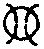

卍新纂大日本續藏經 第71冊
No.1406 石溪心月禪師雜錄 (1卷)
【】
第 1 卷
No. 1406
傳衣石谿佛海禪師雜錄
和張防禦
我有一方田。於中息萬緣。生涯雖寂爾。日用不徒然。知足長年樂。無求在處禪。西隣知此意。松竹銷寒煙。
送超禪人歸省親
參玄曾未造玄微。肯學新豐十不歸。歸舉清凉答佛話。教娘知有祖師機。
歸雲
拖雲從龍去又回。無心却似有心來。只因怕失老僧約。永日岩房撥不開。
臭菴
自家汗氣不曾覺。口未曾開人已知。熏出蘇州二石佛。一人掩鼻一攢眉。
中山
英標拔俗一千丈。壁立孤危不可攀。南北東西徒斫額。誰知步步在其間。
省行堂主。往霅川化油
火冷灰寒老病身。一燈深夜伴孤貧。忍將滴滴思鄉淚。說與溪頭問疾人。
異手相士
天地同根歸一指。先生三四已為多。等閑竪起拳頭處。數量如何數得他。
送保慧大師
生在如來家。須學如來行。諸念入正念。有諍歸無諍。少林佛國不再見。臺山大會堪憑□。波何人哉我何人。眨起眉毛宜猛省。
送林藏主省親
有十不歸今且歸。不願再見今再見。古今大道常坦然。各自當門通一線。
送珙上人之廬山
不到廬山不是僧。斯言斯語亦何曾。珙今興盡還歸去。五老依前倚碧層。
送艮侍者。隨本師歸瀘南
依師參扣到無參。只麼呼三應亦三。話到不相辜負處。瀘南元是舊瀘南。
孟府送猿有頌。次韻謝之
居從岩洞友熊羆。養在候門送石溪。要識將軍成物意。往來莫作聽猿啼。
延壽化帳
捲起何如放下時。微風輕撼碧雲垂。夜深動地蚊雷吼。病枕安然總不知。
沈兼簽記夢
一微塵裡三千界。半剎那間八萬春。如是往來如是住。不知誰主又誰賓。
送慧大師
剃除紺髮搭伽梨。經卷輪珠常自隨。欲扣玄關參自己。好看實際訪俱胝。
昌大師(號曰桂岩)住廣福。說偈勉之
桂岩桂子久飄香。時節催開選佛場。莫作末山施半杓。使人特地喚娘娘。
聰大師號無聞。送廣福住院
來日臺山大會齋。隔身句子絕安排。如今已落無聞手。雙放雙收機莫偕。
示本上座
勿游魚魯刁刀市。莫逐千干十卜人。他日有緣重會面。金毛獅子要嚬呻。
送李道士
細探道德五千字。字字君家說底書。要識玄之又玄旨。淡然清對了無餘。
送圭維那
年來箇事帶誵訛。十卜千干不較多。狹路相逢略擡手。看伊眼腦是如何。
送光典座
辣辣辛辛一味禪。慣常豈在杓頭邊。一千五百善知識。未出門時話已圓。
送真大師
戴起還同放下時。好觀實際訪俱胝。至今五百年來下。一段風光付與誰。
送心淨頭
處塵勞界住深禪。幾度悲心碎復圓。得失是非都放下。頭頭皆我舊山川。
行者智江。歸廬山。乞頌
庭前荒草正萋萋。却憶丹霞剗去時。蓮社峰高相見了。回來却把聖僧騎。
小佛事(法事次第。依屏岩清規)
第一移龕
第二鎻龕。仙上坐
大仙心。擬分付。萬德不將來。千手拓不去。仙上座。放下著。猛提取。此時入得此門來。還須鎻斷奔馳路。
第三掛真。石田和尚
南山片雲。西湖滴水。面目全彰。何處迴避。謂是石田老人。千里對面。謂非石田老人。對面千里。是耶非耶。(乃展真云)總在者裡。休論漚滅漚生。愛取清風匝地。
第四舉哀。無準和尚
空索索而來。逼塞虗空撥不開。赤條條而去。積岳堆山無著處。便恁麼。猶是最初機。未是末後句。且如何最末後句。(顧視大眾)蒼天蒼天。冤苦冤苦。
第五奠茶。鐵塔長老
五更睡眼正迷麻。歸夢悠悠未到家。探盡方書窮秘訣。只消苦澁一甌茶。正覺長老。於此證得命脉去。昔年正覺堂上。逢而不逢。今日涅槃臺前。別而不別。雖然如是。慇懃傾盡此盃去。烈焰堆中急轉身。
第六奠湯(欠)
第七對靈小參。為淨慈無極和尚
我宗無語句。亦無一法與人。所以德山入門便棒。臨濟入門便喝。如撾塗毒鼓。如按金剛王。聞之者喪。擬之則亡。一向恁麼去。道絕人荒。雖然官不容針。不免別開線路。向二千年前。十萬里外。親面相見去也。阿呵呵。人從江西來。報道仰山集雲峰。與廬山蓮社峰比肩。同往中印土拘尸那城。恰值二月十五日。黃面老子入般涅槃。臥金棺露雙足。說偈曰。諸行無常。是生滅法。生滅滅已。寂滅為樂。遂化三昧火。焚金色身。見火中金剛舍利非我等事。回謁達磨大師於熊耳峯下。低頭問訊。舉目一觀。大師已在葱嶺。手携隻履。翩翩獨行。乃進前問曰。行色何怱如是耶。幸聞一語。曰。五口相共行。九十無彼我。乃以手指云。烏那曹溪大師。治裝歸新州。宜往送之。大師聞其語。舉手搖拽云。葉落歸根。來時無口。引得南山無極老人。忍俊不住。索筆書偈曰。六十四年。生憎佛祖。一笑翻身。虗空獨露。乃倒騎慧日閣。出三門。逾西湖。蕭然長往。(喝一喝)集雲峯歸仰山。蓮社峯歸廬山。(拈拄杖云)惟我拄杖子。雖不入他保社。仁義道中。也要助哀。(卓拄杖一下)復舉。南院僧問。從上諸聖。向什麼處去。院云。不上天堂即入地獄。僧云。和尚作麼生。院云。還知寶應老落處麼。僧擬議。院以拂子驀口打。復喚僧近前云。令合是汝行。又打一拂子。雪竇云。令既自行。且拂子不知來處。雪竇道箇瞎。且要雪上加霜。師云。是則全機作用。非則倚勢欺人。若知淨慈堂頭落處。便知從上諸聖落處。且即今在什麼處。(良久云)佛祖位中留不住。人間天上絕安排。
第八起龕。震侍者
震青天雷。擊塗毒鼓。伶俐衲僧。點頭自許。以靈山為師。以徑山為父。同門出入相辜負。既知移步不移身。何似移身又移步。
第九門首掛真(欠)
第十門首茶(欠)
第十一門首湯(欠)
第十二下火。鑒知客
趙州喫茶。韶陽抽顧。石田徹底鄉情。隻手一齊分付。便把南山換北山。時將東土移西土。鑒知客猛省提撕。更進一步。脚未跨刀山。投身大火聚。
淨慈無極和尚。第二把火(有頌)
舉火炬云。此火把子。上竺講師。已為說破了也。靈隱不免頭上安頭去。六十四年。過犯彌天。生憎佛祖。結盡冤苦。一笑翻身。趯倒畫瓶。虗空獨露。又恁麼去。此是無極禪師。末後親手分付。未是他家末後全提句。石肝膓銕面具。未上刀山。先投火聚。解使陝府鐵牛。吞却南山石虎。亦未是他家出沒卷舒游戲玩具。無極老人。有些真實好處。語言所不及。又如何商量。(擲火炬云)向者裡著取。
第十三清凉無相長老。提衣
盡大地是清凉正體。無一絲非無相妙衣。此衣不可覆藏。天寧如何提掇。(舉衣云)雞足峰下。多子塔前。闊狹短長。應量恰好。於此承當得去。豈止價重娑婆。苟或躊躇。一唱五百。
第十四告副莊。舉骨
合磵橋邊。二寺門外。一片閑田。水雲聚會。告禪既有靈骨。也好瞎驢趂隊。要見麼。面具現在。
湛堂主。入骨
當處常湛然。覔之不可見。要見麼。(舉骨云)箇是湛堂主。向飛星撒火處。収拾得底。落在山僧手裡。畢竟如何分付。湛堂主。日月不及處。要儞急翻身。
第十五源監寺。入塔
源從劍門來。久在南湖寺。謂與南湖同。不與南湖比。倒跨楊岐三脚驢。幾度州中糶黃米。佛口虵心。雞頭鳳尾。一時収入此門來。塔戶風光都屬儞。源監寺宜相委。冷地不得打睡。
第十六癡絕和尚。入祖堂
未登鍾阜阿蘭若。已踞凌霄窣堵波。莫謂老人無定止。只緣貧恨一身多。如是如是。放下分身兩處看。不然不然。日午依然虧一半。此是住當山第三十五代癡絕和尚。即今向什麼處安著。莫言無位次。何處不稱尊(已上當代住持。入滅法事。次第如是)。
月庭和尚。第二把火
前丹丘報恩月庭和尚。還記得麼。最初一步。天台智者不覺點頭。末後一機。妙峰老人至今斫額。與麼與麼。一片孤光合自知。不與麼不與麼。兩處分輝負清墮。於斯生死去來。今日一時放過。(舉火云)月庭和尚。只者箇。不得喚作性火真空。又不得喚作性空真火。直下承當休懡[怡-台+羅]。側聽白雲重點破。
為坦都莊下火
昔年曾作莊中主。祖父田園已遍知。夜半人牛俱不見。此時正值月明時。(某人)末後句莫追隨。七十五年無影樹。且看火裡倒抽枝。
樞典座(下火)
羮以笟籬。飯以木杓。二年同一春。如法修事著。山中眾口六十丈。老樞只憑者一著。者一著是什麼。(某人)還會麼。大洋海底火星飛。何似嵩山破竈墮。
寄首座(下火)
孤然絕攀。翛然無寄。四十四年。邡潭鱉鼻。天宮第二座說法。睡眼未開。徑山分座提綱宗。言猶在耳。(某人)諸事且置。而今風乍休雨乍霽。出門無事相餞行。領取山僧火把子。
昱西堂(下火)
環瑯山中恁麼來。天聖屋頭恁麼住。凌霄峰頂恁麼去。(某人)天寒。且來者裡向火。
虔菴主 固知庫(下火) 德立直歲。入塔
世事炎炎如火聚。老虔一一盡知之。而今換步移身去。正是蓮開見佛時。
深固幽遠。到者知幾。惟固知庫。全身在是。青山白雲中。紫煙紅焰裡。撒火飛星皆在儞。
有德可立。無道可修。問田中事。叉手拽鍬。風骨既露。醜惡難収。(某人)背陰山兮向陽處。多子相逢笑未休。
喜西堂(下火)
祥符長老悅翁西堂。還記得麼。三十年前生銕面具。思蒙江上轉脚來。踏斷思蒙江上路。不倚周孔垣牆。不入老莊門戶。住祥符而不作祥符主人。依凌霄而不作凌霄伴侶。漚漚和和中[匡/六][匡/六]結結。歡歡喜喜處莽莽鹵鹵。而今雲散水流。又向什麼處去。(某人)未上刀山。先登火聚。
艮院主(有頌) 珍修造(下火)
六十四年。密密綿綿。隨方逐圓。失却半邊。雲収雨散。銕船到岸。月落青天。面目依前。江國春風二三月。錦官花木正爭妍。艮院主。打圓相云。忽然者箇用事時如何。颺火炬云。只管看。
劒關珍禪者。成就大功用。用處鴻毛輕。功成山岳重。如是三十年。助佛鑒建生伽藍。而於佛鑒而不共。我此大覺寮。工役公所量。豈期時節到來。遽然而長往。珍修造。久雨欲晴未晴。在儞惜求火種。
昇山主入骨
德臘崇高。識見明達。少年篤學而竭力奉師。晚歲住山而隨機應變。為嚴金佛靈蹤。幻出瓊樓玉殿。一日功圓果滿。琅琅付囑而歸。尚留火後莖茅。却要徑山判斷。(舉骨云)昇山主。擁不聚撥不散。從教狼藉空岩畔。
康書記(下火)
從西過東。從東過西。步步全是。步步還非。惺惺憶得到家時。從前三百篇。到此徒爾為。從空放下。更莫思惟。嶺上石人歌一曲。度爐金佛也掀眉。
法臻淨頭(下火)
雙徑室中真子。豈同門外遊人。步步是家山。念念皆正定。有時捨淨入穢。有時去穢持淨。在兩邊不住兩邊。是戲論終非戲論。法臻淨頭。丙丁童子相邀。要儞說些禪病。
郁都管 安塔主 珍藏主(下火)
郁都管。溪東溪西。田頭田尾。放去収來。了無虗棄。如是扶持。如是標格。本利見成。休貪足陌。郁都管。冷看而今是甚火色。
塔中主塔中主。山僧也下一轉語。何似生。在窟金毛。藏林猛虎。威風凜凜然。爪牙曾不露。如是八十年。覔之了無處。覔無處即其住。安塔主。今向烈焰堆中。猛著精神。宜自薦取。
師資會遇。三喚三譍。(舉火云)只憑者箇。一大藏教。演出演入。(舉火云)亦只憑者箇。三世諸佛。在火焰上。轉大法輪。却憑什麼。珍藏主。猛著精神。莫教蹉過。
超浴主 紹都寺(石田小師) 初水頭(下火)
既不洗塵。又不洗體。妙觸宣明。成佛子住。只知得中間安然底。且未會鑊湯無冷處。超浴主。還會麼。火焰裡薦取。
(某人)要識老爺門戶麼。紹之甚易。承當最難。承當猶自易。守護却為難。難難。屋壁俱[狦-(狂-王)+土]。易易。清風掃地。紹都寺。知也未。家家門前火把子。
雨零零風颼颼。藤枯樹倒。便賦歸休。既解敲冰藏火種。何妨撥火覔浮漚。
珦副寺(下火) 珦(許亮切。玉也)
昔本不生。今亦無滅。要行便行。何太奇絕。兩處賣洞山生薑。一生用少林秘訣。珦副寺。末後如是慇懃。若得山僧把火助熱。
義殿主 清維那(下火)
古殿無佛。日日香煙夜夜燈。梵音何來。須是少林真種草。可謂作有義事。是醒悟心。是何言歟。作無義事。是散亂心。是何言歟。義殿主。有亦不拘。無亦不拘。蕩蕩身心只自如。却來火裡現芙蕖。
清虗之理。體自如如。有之則虧其德。無之則傳其軀。何來何往。孰親孰踈。(某人)寬廓寂寥都放下。炎天飛雪擁紅爐。
圓覺講主(起靈)
從無住本。示有相身。寄人間六十九年。了夢中百千三昧。唯心淨土。示有去來而不墮去來。自性彌陀。具足圓覺而住持圓覺。曰戒曰定曰慧。以嚴自身。非空非假非中。以導後學。經行坐臥。常在其中。雖曰授金臺。了知萬法不受。能事既畢。卷衣便行。移身換步一句作麼生道。去此不遠。涅槃臺前。有一善知識。名勝熱婆羅門。宜往彼問。
同庵講師掩土
萬法同中有不同。混然都在一菴中。而今同異俱拈却。踏斷飛來最上峰 伏惟。新圓寂。同庵都錄大講師。乘悲願而來。來無所來。依悲願而住。住無所住。是故從無住本。示有為功。以戒定慧嚴自身。指空假中惠後學。教門是賴。主席屢遷。雖云有道可傳。猶錦鱗之滯水。而實無法可說。似彩鳳之翔雲。六十九年一彈指頃。談笑自若。卷衣而行。雲外天香遽寂寥。座間花雨俄狼籍。盡謂到江吳地盡。那知隔岸越山多。於斯見同庵老人則未可在。要見同庵老人麼。佛壠龕中尋不見。白雲影裡却相逢。
高麗講師開龕
沒鬚鎻子鎻青空。鎻斷奔馳路不通。珍重無為無事客。不知全體在其中。故我慧因正主。賢首的傳。高麗堂上不庵講師。七十三年。本無來去。百千三昧。常自現前。進退步趨。總是中道大人境界。語默動靜。無非真空妙理法門。處處象王回旋。頭頭師子奮迅。如是如是。休論月午當臺。不然不然。且任須彌墮地。正當此時。且道。不庵講師。常在其中。不滯其中一句。又作麼生。金鎻玄關部掣斷。大千經卷出微塵。
施主煆髮(下火)
才有一毫頭。便是一毫頭。翳却頂門眼。剗去勿存留。只箇一毫頭。不是一毫頭。堆山積岳。塞壑填溝。此一一毫頭是不是一一毫頭亦復爾。會看烈焰雪花飛。不必撥炎求舍利。
清淨燈首座。撒骨
石城頂[寧*頁]望鄉園。目力窮時却宛然。江國春風忽吹散。不知消息落誰邊。(舉骨云)箇是清淨爐鞴裡。千煅萬煉底。燈首座一把靈骨。堅如金石。瑩若冰霜。放去則包括十虗。収來則總在者裡。平生道義。末後夤緣。落在天寧手中。且道如何安著。區中日月不及處。方外乾坤自卷舒。
行者道寶(下火)
道中至寶。何處尋討。內外討之無蹤。日用用之恰好。三十三年。為陳氏之子。不紹家世箕裘。四五六歲。在天寧出家。不剗殿前之草。無拘生死去來。不管菩提煩惱。然雖如是。更須知有末後一句。舉火云。透者一關。隻手分付。
為智舉五戒(下火)
天台臨海舉五戒。靈隱堂中幾歲華。掃地添爐新活業。拾薪供水舊生涯。不憂衣鉢不入手。且喜身心已出家。(舉五戒)劫火洞然無退轉。却來領取一袈裟。
知覺飯頭(下火)
辨出家事。真出家兒。淘米去沙底不是。淘沙去米底亦非。(舉火云)為伊點發者些兒。從教徧界火星飛。
淨道淨人(下火)
出家勤苦貴精修。衣食隨分勿外求。墜石腰間貪踏碓。不知明月過滄洲。既為靈隱堂中客。當把盧公作標格。明心見性如未曾。不免死生苦煎迫。今年隨我過虎丘。一疾纏綿只麼休。休則休已。畢竟向什麼處去。便取山僧火把子。明來明去任優游。
蘇州道人(撒骨)
入得焦山潑天門戶。未是頑賴。禁得焦山亘天爐鞴。未是頑賴。(舉骨云)直得歷歷落落。玲玲瓏瓏。如今放去也。鳥風振海。白浪翻空。不貪香餌碧潭寵。
持淨來園頭(下火)
靈隱堂中客。事園持淨來。钁頭輕颺下。底事絕疑猜。解把菩提樹。徧於火裡栽。來園頭。爐中灰燼莫添柴。鐵樹無花也著開。
為朱老郎(下火)
浙東四明山。浙西西湖水。欲識朱老郎。面目只者是。平生妙用與神通。運米搬柴第一功。歷徧諸難六十六。事主之心元不同。人言已死豈是死。我道出彼還沒此。渾侖一句相贈行。家家門前火把子。
為張府夫人余氏。起棺。并掩土
無相身中有相身。黃金宮闕幾番新。百年回首渾如夢。誰是惺惺做夢人。歿故夫人余氏。四十九年。從無相中出生。有相中入滅。中間一動靜一語默。往來於黃金殿上。白玉樓前。富貴榮華。無非佛事。須知夢中有不夢者。昔人云。色身敗壞。如何是堅固法身。曰山花開似錦。澗水湛如藍。若向者裡領略得去。不妨與七賢女。把手共行。苟或躊躇。則聽一偈。浩浩塵中七寶聚。於中未是安身處。青山影裡白雲飛。緩步移身亟歸去。
世界未成。早有此片田地。胞胎既具。便屬夫人余氏。而今地闢天開。風光溢目。山圍水遶。春意滿前。正當窀穸之辰。遽忍別離之恨。舍人撫別。令子拜違。親屬悲摧。挽留莫及。正恁麼時。只知夫人埋玉於斯。而不知佛子住此地。即是佛受用。佛子復是阿誰。又喚什麼作此地。於斯受用去。經行坐臥。總在其中。佛國天堂不居心外。末後一句。又作麼生。一微塵土都遮護。富貴榮華付後人。
郭公。起靈。掩土
生從無相中受生。滅向有相中變滅。於中心識本來空。一點靈光常照徹。歿故郭四公。與麼見得去。昔本不來。虎踞龍蟠面面開。今亦無去。吳水秦淮如是住。湛然不昧去來機。一段風光付與誰。好箇轉身時節子。青山雲外待多時。
是中一所黃金藏。雪擁雲埋知幾年。溢目風光無限好。如今端的落誰邊。落在郭公邊了也。還見麼。淮山橫立。大江來朝。松蘿週遭。煙雲舒卷。賢父兄。六十年面目再覩。孰後孰先。好兒孫。五百載旺氣所鍾。曰富曰貴。可謂家世棲遲之所。九原安樂之窩。葉落歸根忘懷得旨。末後一句如何舉揚。開眼閉眼是西方。舉足下足皆極樂。
為上海蔡府屬。起靈。并秉炬
一葉乘潮泛淺深。問津上海訪三林。水雲影裡逢迎地。萬里平疇一片心。故我蔡公府屬。昔日來于斯。一生居于斯。治生立業于斯。仰事俯育于斯。乃至剖破藩籬。廣布仁惠。勤修檀度。徧歷諸山。亦不出于斯。是以田園望望鵶飛不度。子孫森森雁序滿前。亦不離于斯。奇哉奇哉。希有希有。能事甫畢。方八十有一春。拂衣西歸。已二百六十日。底事潮聲帶慘。風韻含悲。將臨火化之場水面飄香。正是蓮開之際死生無憾矣。轉身一著。又作麼生。雙檜庵頭曾有約。佇看火裡現優曇。
(竪火炬云)還見麼。三世諸佛向者裡。成正覺坐道場。放大光明。破諸幽暗。歷代祖師。向者裡。傳佛心宗。開大爐鞴。煆聖鎔凡。得道諸師。向者裡。辨正邪焚外書。流通正法。大檀越蔡君宜義。有條攀條。無條隨例也入一分。今日向者裡。捨死生分段之身。得金則堅密之體。且雙林樹下。金棺自焚。今日雙檜菴頭。香薪自燼。雖然如是。末後一句。徑山老僧。與檀越蔡君。宿有夤緣。不妨今日說破。(舉火炬云)蔡府屬惺惺著。猛著精神。向這裡薦却。
為劉都鈐。掩壙
仙姑一片閑田地。今日誰來作主人。無限風光都占了。那堪花木四時春。大眾。此一穴地。混沌未分之前。已屬劉公都鈐了也。混沌既分之後。天地秘之。生靈守之。俟今日今時。和四至界畔。一時付與都鈐大尉。永為棲遲之所。佛土天宮。盡在于是。此所謂佛子住此地。即是佛受用。常在於其中。經行及坐臥。(某人)靈輀在此。且道一靈真性在什麼處。若也薦得。面目現在。其忽未然。好水好山環遶處。森森松竹引清風。
掛海湧一峰額
古者道。千隴萬隴。不若一湧。我此山名從海湧。寺曰雲岩。塔戶鎻晴空。鐘金敲碧落。天下第一勝地。人間最上福田。故云。此峰特標海湧。収斂雲山旺氣。壯觀水陸雄觀。萬歲千秋。祝皇家壽考。千秋萬歲。宏祖域風規。莫怪山僧重說偈句。高懸海湧一峰牌。瑞氣祥光遍九垓。近水遠山無限意。一時収入此中來。
楓林掛勸忠旌孝寺額
楓林勝槩。古今植福之場。門扁新題。忠孝旌褒之地。喜誦唐人詩句。尚聞夜半鐘聲。一段風光千手莫掩。八字飛舞千眼頓開。信手拈來當陽顯示。廣野朝格下之澤。元樞奉如在之靈。綿香火於無窮。俾山林之有托。正恁麼時如何。(指額云)更宜高著眼。題目甚分明。
墨梅一題序
叢林以偈頌。為禪悅餘味者。葢黃梅有曰。此偈亦未見性。法眼有曰。此頌可續吾宗。此皆因語而識人也。往往禪宴之暇。一歌一詠。以淘汰業識。疏通性源。亦未敢髣髴單明之旨。否則錯礱言句。滋培道根。其損益又從而可知。學者不可不審。頃在四明。同清凉範長老遊大梅。或索和花光師墨梅十題。題曰懸崖放下。曰絕後再甦。曰平地春回。曰淡中有味。曰一枝橫出。曰五葉聯芳。曰高下隨宜。曰正偏自在。曰幻花滅盡。曰實相常圓。首尾託物顯理。借位明功。以形容禪家流工夫。從入道應世。至於得旨歸根邊事。無準於實相常圓。著語云。黃底自黃青底青。枝頭一一見天真。如今酸澁都忘了。核子如何說向人。予愧短乏。哦咏非素習。不得已。亦勉強思量。到思量不及處。果幻花滅盡耶。墨梅無下口處耶。懡[怡-台+羅]中不覺失笑。噫。絕後再甦耶。平地回春耶。於湊泊不及處湊泊。成二百八十字。字韻句意不揀重複。但不失題意而已。掉在無事甲中。十見青黃。一日與畏友艮岩。火爐頭夜話之。艮岩亦忻然成十章。併錄之放筆一笑。是淘汰業識耶。是錯礱言句耶。必有為我剗去者。
題無染頌軸後
純公座元號無染。乃鍾山第一座崈公稱之。復作序。序之意。以有無染淨。是二邊語。存一遣一。共過患等。雙遣雙存過患。亦匪存匪遣。茫茫莫究。其辭宛轉。其意深妙。光明藏中。快說禪病。莫過于此也。末後又云。余著語是無染上一重染污。今諸公從而頌之。是一重更一重。無染安在哉。不向一重復一重處求之可乎。石溪野人直言之曰。要識吾無染。純公座元是。
凹岩說(採三字隱語作)
金仙子隱曰偉子蒙。沂子良。寂子照。癸巳仲春月望。會月子友於石溪之北。日永風清。漱石枕流。相為賞樂。適福都子隆子至。奉細綰盈鋪之供。子友緩帶摩腹。指空作凹岩字遺曰。貧無以贈一之三三名號洋洋乎言說不虗。子隆子俯而思。名號虗聲也。言說亦無實義。即虗聲而承言說可乎。舍言說而求實義可乎。復嘿而言。虗聲即實義耶。實義即言說耶。久不自決。三子隱知其心語。乃伸右手。各持一凹岩。兀兀然巍巍然。或嵌嵌确确。空空洞洞。或東西相向。似有還虧。頭角崢嶸。若平而險。白雲變態。素月分輝。流泉風松。幽禽和唱。各各岩前。一一陳露。子隆子不起于座。如是而觀八十小劫。心目不搖。子友說偈。寤之曰。欲寫凹岩字未成。雲開頭角見崢嶸。中間一缺隱身地。換盡面前人眼睛。子隆子不覺唯唯點頭。卷之而去(自兀兀然。至幽禽唱。皆三子隱頌中之語)。
太虗說
竺乾古皇先生有句語。如漫天網子相似。非同太虗。非異太虗。而含裹太虗。如是不離本處。即一切處。陞法空座。演此句義。四十九年。莫能究其萬分之一。最後會百萬眾於一青蓮華上。獨擎拳高士忻然微笑。先生目之。只得兩手分付。綿綿至今無空缺處。同流異學。密證顯符。莫知幾何。有柱下隱君子之徒。知清淨身。如太虗之無邊。故背之而坐。鈎在不疑之地也。悟平常心。如太虗之豁然。故從西過東。無乃攙行奪市乎。後五百載從寂寞冲虗中。蹉脚南來失手摸著。四面八方。回避不及。披襟當之。號太虗者。吾眉山揚若冲道士也。歲莫抱焦桐。訪城西蘭若。須臾言辭。故囑之曰。異日平步家山。遇賞音試彈此曲。使大音希聲充乎太虗。則不枉南來徒費草鞋錢也。太虗太虗勉旃。
跋無傳頌
鍾山正知客。忽起故山之思。往別北磵於常熟慧日。磵喜其為正傳室中真子。乃以無傳號之。山中勝集。皆有出山句。橫推竪推。無非以祖祖相傳。傳而無傳。不是無傳。而曰無傳。葢無傳即正傳。正傳即正無傳也。噓。無傳之旨。果如是耶。若言以心傳心。却喚什麼作心。即世諦則偽求之可乎。離世諦則偽求之可乎。或曰。到處見成親受用。不從葱嶺帶將來。皆非吾所能知也。要識無傳之旨。當從正無傳問之。
跋覺如居士手書心經
覺如居士。公務餘暇。手書法華楞嚴圓覺金剛等經。仍集古今諸家解說。布於章句之下。末後収功於心經。其微意不言可知。余展卷一觀。見諸家所註。一言是一言一句。居士所書。一畫是一畫。一字是一字。不免合掌贊嘆。奇哉心經也。若離此別求可乎。淳祐己酉。端午後五日。靈隱住山某跋。
跋游參政所書心經
龜堂大資相公。燕居霅上。日書心經。惠諸來學。余游太白。方一聞之。心已起敬。及抵冷泉。始獲一見。奇哉第一希有之書也。古今王公大人。於此道。或傾心贊之。或肆口毀之。雖贊毀不同。同一心也。楞嚴曰。順逆皆方便。矧龜堂所書二百七十六字。既以心名。孰不具有。先覺後覺。同入此門。如是宣說。如是書寫。信解受持。依如是住。噫。此時非菩薩行深般若波羅蜜多時耶。具頂目者。乃能默契。
添藏經施主。水陸。陞座說偈
大悲心上流出底。呼為切脚若為評。不知切脚什麼字。寫不成兮呼不成。依依俙俙如半月。髣髣髴髴若三星。分付老昭諸善士。生生世世壽康寧。
容大師。水陸。陞座說偈
末山一境不露頂。直下全超五障身。佛國無邊皆自己。臺山大會付何人。苾蒭草碧枝枝秀。菡萏花紅葉葉新。外祖深恩只者是。一菴和氣暖於春。
如行新戒。落髮升座
患累資生無有涯。選官選佛學丹霞。須知髮剗殿前草。不礙萱開堂北花。萬法從心心是正。一心逐物物皆邪。夜窓寂寂青松下。究徹根源始到家。
勸請首座掛牌上堂
三春去向那邊去。九夏來從屋力來。一喝兩頭俱坐斷。人天眼目與誰開。烏飛兔走。地轉天回。時有清風匝九垓。寒山子滿頭灰。引得豐干笑滿腮。且道笑箇什麼。問取首座。
上堂。善惡不思。名為頂句。內外絕依。名為得住。時時寂寂惺惺。時時退步薦取。如是三十年。覔之總無處。覔無處。贏得雙眉時陡聚。
上堂。外息諸緣。內心無喘。心如牆壁。可以入道。此非少林初祖畫出底模子耶。了了常知。言不可及。此非二祖從模子裡脫出底耶。而今心憤憤口悱悱。一箇半箇板齒為鐵橛。將者模子。一嚼百雜碎。非知恩報恩者耶。山僧斫額以待。
上堂。舉馬大師因僧問。如何是佛。馬云。即心是佛。後南岳讓和尚聞云。馬子未在。更五年。馬云。非心非佛。讓云。馬子未在。更復五年。馬云。不是心。不是佛。讓云。馬子徹也。後有僧舉似大梅。梅云。者老漢。教壞人家男女。未有了日。儞但非心非佛。我只即心即佛。師云。馬大師。非特教壞人家男女。亦乃錯誤後代兒孫。那裡是他錯誤處。鯨吞海水盡。露出珊瑚枝。
上堂。舉臨濟無位真人話。師云。日永風清。雷奔電卷。無位真人。略通一線。急須著眼看仙人。莫看仙人手中扇。
施主請水陸陞座
舉僧問福嚴。某甲百年後。以何為津梁。嚴指心云。以此為津梁。僧亦指心云。如何是此。嚴云但行好事。莫問前程。師頌曰。百年將底作津梁。直指心田是道場。八萬四千安樂法。(指胷云)只於此處可承當。
舉臨濟半夏上黃蘗。却回終夏古則。師拈云。黃蘗養子之緣。臨濟事父之禮。一時清規。千載榜樣。因甚到中途。疑此事而回。須信甜瓜徹蔕甜。
舉。臨濟無位真人乾屎橛古則。師頌曰。沒便宜處討便宜。無位真人小廝兒。如是去來如是住。無時不是在家時。
讚
出山相
棄却金輪尊貴人。要來平地討艱辛。如斯面目塵埃甚。更說優曇別是春。
草衣文殊
披草衣。執具書。面不洗。頭不梳。是文殊。非文殊。擬議臺山路轉迂。
馬郎婦
願海散香風。花披菡萏紅。錦鱗方上釣。金鎻已騰空。
自在觀音
日高花影重。風暖鳥聲碎。在在圓通門。門門觀自在。寶陀峰頂較些些。片月分輝照滄海。
泛蓮觀音
一葉蓮舟泛渺瀰。誦觀音也戴阿彌。希奇妙相毫端上。五濁眾生知未知。
藕絲觀音
頂戴阿彌。不假花冠之纍纍。肩披藕絲。不必瓔珞之垂垂。孤然不倚。儼然若思。我於一十九類三十二應身中。次第觀之。而無如是抱膝安閑大自在之風規。
布袋
矬而肥。肥而癡。肩駝背負。或徐或馳。回頭處微笑時。此意明明說向誰。
達磨祖師
跨水行人語不符。絕江足踏一莖蘆。此時獨自棲棲去。今日人將入畫圖。
小師正知。畫師頂相請讚
高厚同源。萬殊一體。卓爾何來。湛然非止。覧蜀天雲。挹龍淵水。際會如斯。孰窮所以。正知知之。不出乎是。
師寄蔣山癡絕和尚。(竝)沂艮岩
急水上旗翻五色。飛流中毬輥百花。相逢相笑勿相嘆。無限行人未到家。
沒絃琴三弄五弄。無孔笛一聲兩聲。明月浮空天似水。長安歸夢恰三更。[○@─]
癡絕和尚(和答) 沂首座
盤陀石上無根樹。畢竟空中有蒂花。樹已成林花結果。行人到此合忘家。[○@(?/─)]
生鐵團上重重縫。電光影裡撮雷聲。果然點眼知人意。便把三更作五更。
女子少年雙鬢雪。婆婆八十滿頭花。芝蘭庭畔相携手。明月清風共一家。○
芻狗吠成師子吼。木雞啼作鳳凰聲。貪觀秋水連天碧。不覺桑田幾變更。○
傳衣石谿佛海禪師雜錄(終)